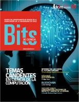
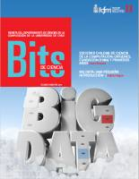
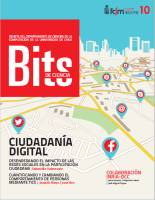
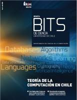
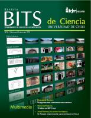
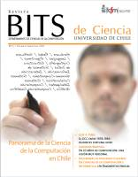
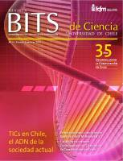

Esta página contiene enlaces a los números publicados de la revista Bits de Ciencia en 2019 - 2018 - 2017 - 2016 - 2015 - 2014 - 2013 - 2012 - 2011 - 2010 - 2009 - 2008.
Página web: Revista Bits de Ciencia
Número 17 - 2019 Primer semestre
Descarga (PDF 13.3 MB español)
Número 16 - 2018 Primer semestre
Descarga (PDF 28.8 MB español)

Número 15 - 2017 Primer semestre
Descarga (PDF 11.6 MB español)
Número 14 - 2016 Segundo semestre
Número 13 - 2016 Primer semestre
Descarga (PDF 9.9 MB español)
Número 12 - 2015
Descarga (PDF 9.5 MB español)

Número 11 - 2014 Segundo semestre
Descarga (PDF 6.3 MB español)

Número 10 - 2014 Primer semestre
Descarga (PDF 11.4 MB español)

Número 9 - 2013
Descarga (PDF 22.3 MB español)

Número 8 - 2012 Segundo semestre
Descarga (PDF 6.0 MB español)
Número 7 - 2012 Primer semestre
Descarga (PDF 4.0 MB español)
Número 6 - 2011 Segundo semestre
Descarga (PDF 3.8 MB español)

Número 5 - 2011 Primer semestre
Descarga (PDF 3.5 MB español)

Número 4 - 2010 Primer semestre
Descarga (PDF 3.3 MB español)
Número 3 - 2009 Segundo semestre
Descarga (PDF 36.4 MB español)
Número 2 - 2009 Primer semestre
Número 1 - 2008 Segundo semestre
Descarga (PDF 2.2 MB español)